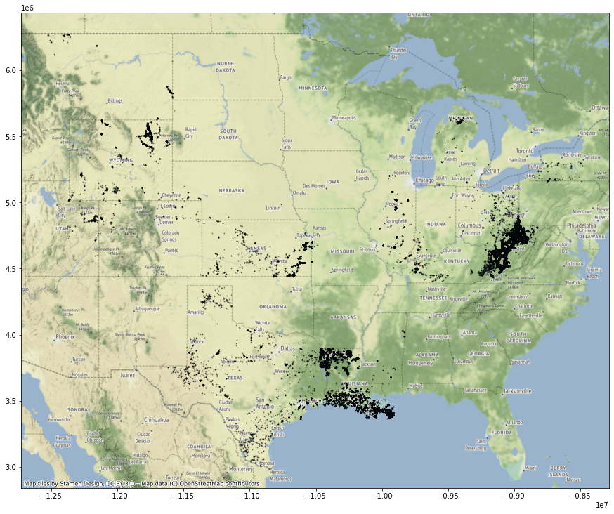
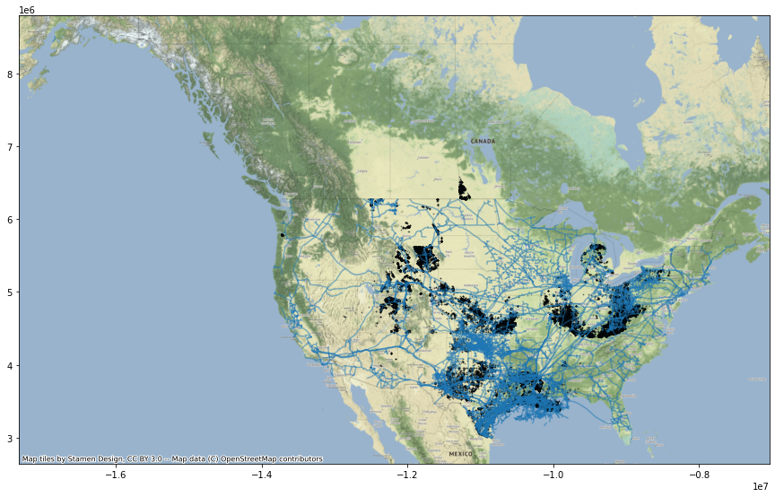

Potential Carbon and Hydrogen Storage Wells Near Pipelines

Justin Napolitano
2022-05-06 05:30:32.169 +0000 UTC
Table of Contents
Warning - check your series - as none found
Potential Carbon Storage Wells Near Pipelines
Import and Procedural Functions
import pandas as pd
import matplotlib.pyplot as plt
import geopandas as gpd
import folium
import contextily as cx
import rtree
from zlib import crc32
import hashlib
from shapely.geometry import Point, LineString, Polygon
import numpy as np
from scipy.spatial import cKDTree
from shapely.geometry import Point
from haversine import Unit
from geopy.distance import distance
Query Plan
Restrictions
- Must be near a pipeline terminal
Imports
- Pipeline Data
- Well Data
Filtering
-
For each well calculate nearest pipeline
-
For each well calculate geographic distance from pipeline
-
eliminate wells further than 2 km from a pipeline
Data Frame Import
Wells Dataframe
## Importing our DataFrames
gisfilepath = "/Users/jnapolitano/Projects/data/energy/non-active-wells.geojson"
wells_df = gpd.read_file(gisfilepath)
wells_df = wells_df.to_crs(epsg=3857)
wells_df.columns
Index(['index', 'OBJECTID', 'ID', 'NAME', 'STATE', 'TYPE', 'STATUS', 'COUNTY',
'COUNTYFIPS', 'COUNTRY', 'LATITUDE', 'LONGITUDE', 'NAICS_CODE',
'NAICS_DESC', 'SOURCE', 'SOURCEDATE', 'VAL_METHOD', 'VAL_DATE',
'WEBSITE', 'WELLIDNO', 'API', 'PERMITNO', 'OPERATOR', 'OPERATORID',
'PRODTYPE', 'COORDTYPE', 'SURF_LAT', 'SURF_LONG', 'BOT_LAT', 'BOT_LONG',
'POSREL', 'FIELD', 'COMPDATE', 'TOTDEPTH', 'STAUTS_CAT', 'geometry'],
dtype='object')
Pipeline DataFrame
## Importing Pipeline Dataframe
gisfilepath = "/Users/jnapolitano/Projects/data/energy/Natural_Gas_Pipelines.geojson"
pipeline_df = gpd.read_file(gisfilepath)
pipeline_df = pipeline_df.to_crs(epsg=3857)
Removing Gathering Pipes from the Data
pipeline_df.drop(pipeline_df[pipeline_df['TYPEPIPE'] == 'Gathering'].index, inplace = True)
Adding PipeGeometry Column
pipeline_df['PipeGeometry'] = pipeline_df['geometry'].copy()
pipeline_df.columns
Index(['FID', 'TYPEPIPE', 'Operator', 'Shape_Leng', 'Shape__Length',
'geometry', 'PipeGeometry'],
dtype='object')
Joining Well and Pipeline Data
nearest_wells_df= wells_df.sjoin_nearest(pipeline_df, how = 'left', distance_col="distance_euclidian")
nearest_wells_df.columns
Index(['index', 'OBJECTID', 'ID', 'NAME', 'STATE', 'TYPE', 'STATUS', 'COUNTY',
'COUNTYFIPS', 'COUNTRY', 'LATITUDE', 'LONGITUDE', 'NAICS_CODE',
'NAICS_DESC', 'SOURCE', 'SOURCEDATE', 'VAL_METHOD', 'VAL_DATE',
'WEBSITE', 'WELLIDNO', 'API', 'PERMITNO', 'OPERATOR', 'OPERATORID',
'PRODTYPE', 'COORDTYPE', 'SURF_LAT', 'SURF_LONG', 'BOT_LAT', 'BOT_LONG',
'POSREL', 'FIELD', 'COMPDATE', 'TOTDEPTH', 'STAUTS_CAT', 'geometry',
'index_right', 'FID', 'TYPEPIPE', 'Operator', 'Shape_Leng',
'Shape__Length', 'PipeGeometry', 'distance_euclidian'],
dtype='object')
nearest_wells_df
| index | OBJECTID | ID | NAME | STATE | TYPE | STATUS | COUNTY | COUNTYFIPS | COUNTRY | ... | STAUTS_CAT | geometry | index_right | FID | TYPEPIPE | Operator | Shape_Leng | Shape__Length | PipeGeometry | distance_euclidian | |
|---|---|---|---|---|---|---|---|---|---|---|---|---|---|---|---|---|---|---|---|---|---|
| 0 | 720167 | 720168 | W560039024 | NOT AVAILABLE | WY | OIL & NATURAL GAS WELL | NON-ACTIVE WELL | JOHNSON | 56019 | USA | ... | 1 | POINT (-11831144.797 5549191.441) | 30227 | 30228 | Interstate | Bison Pipeline | 1.278462 | 173030.322980 | LINESTRING (-11790336.630 5494422.424, -117865... | 44625.275370 |
| 1 | 708507 | 708508 | W560027364 | NOT AVAILABLE | WY | OIL & NATURAL GAS WELL | NON-ACTIVE WELL | CARBON | 56007 | USA | ... | 1 | POINT (-11976297.510 5042534.715) | 31358 | 31359 | Interstate | Questar Pipeline Co. | 0.268145 | 30447.011086 | LINESTRING (-11984506.320 5012658.646, -119851... | 30816.842943 |
| 2 | 715428 | 715429 | W560034285 | NOT AVAILABLE | WY | OIL & NATURAL GAS WELL | NON-ACTIVE WELL | FREMONT | 56013 | USA | ... | 1 | POINT (-12044048.444 5207896.951) | 27131 | 27132 | Interstate | Southern Star Central Gas PL Co. | 0.076245 | 9557.779719 | LINESTRING (-12038734.497 5151818.779, -120317... | 50999.469183 |
| 3 | 708591 | 708592 | W560027448 | NOT AVAILABLE | WY | OIL & NATURAL GAS WELL | NON-ACTIVE WELL | CARBON | 56007 | USA | ... | 1 | POINT (-11992810.532 5106126.430) | 27138 | 27139 | Interstate | Southern Star Central Gas PL Co. | 0.114048 | 12695.765286 | LINESTRING (-11980997.975 5107748.211, -119936... | 1621.781149 |
| 4 | 715495 | 715496 | W560034352 | NOT AVAILABLE | WY | OIL & NATURAL GAS WELL | NON-ACTIVE WELL | FREMONT | 56013 | USA | ... | 1 | POINT (-12008860.576 5221474.537) | 30360 | 30361 | Interstate | Tallgrass Interstate Gas Transmission | 0.141284 | 17069.395563 | LINESTRING (-12038891.235 5265881.681, -120248... | 53608.161741 |
| ... | ... | ... | ... | ... | ... | ... | ... | ... | ... | ... | ... | ... | ... | ... | ... | ... | ... | ... | ... | ... | ... |
| 160441 | 681337 | 681338 | W560000194 | NOT AVAILABLE | WY | OIL & NATURAL GAS WELL | STORAGE WELL/MAINTENANCE WELL/OBSERVATION WELL | HOT SPRINGS | 56017 | USA | ... | 4 | POINT (-12088044.133 5432638.661) | 27457 | 27458 | Interstate | Williston Basin Interstate PL Co. | 0.122880 | 13678.939029 | LINESTRING (-12027891.088 5426896.907, -120415... | 46827.452302 |
| 160442 | 681764 | 681765 | W560000621 | NOT AVAILABLE | WY | OIL & NATURAL GAS WELL | STORAGE WELL/MAINTENANCE WELL/OBSERVATION WELL | NATRONA | 56025 | USA | ... | 4 | POINT (-11835017.602 5370182.897) | 13162 | 13163 | Interstate | MIGC Pipeline System | 0.336895 | 38635.742298 | LINESTRING (-11751892.222 5349172.198, -117585... | 55995.518283 |
| 160443 | 681344 | 681345 | W560000201 | NOT AVAILABLE | WY | OIL & NATURAL GAS WELL | STORAGE WELL/MAINTENANCE WELL/OBSERVATION WELL | HOT SPRINGS | 56017 | USA | ... | 4 | POINT (-12094765.493 5453280.825) | 3383 | 3384 | Interstate | Colorado Interstate Gas Co. | 0.417645 | 59503.770559 | LINESTRING (-12026665.683 5436962.405, -120527... | 54038.158553 |
| 160444 | 681331 | 681332 | W560000188 | NOT AVAILABLE | WY | OIL & NATURAL GAS WELL | STORAGE WELL/MAINTENANCE WELL/OBSERVATION WELL | HOT SPRINGS | 56017 | USA | ... | 4 | POINT (-12083043.216 5431486.077) | 27457 | 27458 | Interstate | Williston Basin Interstate PL Co. | 0.122880 | 13678.939029 | LINESTRING (-12027891.088 5426896.907, -120415... | 41726.321721 |
| 160445 | 681763 | 681764 | W560000620 | NOT AVAILABLE | WY | OIL & NATURAL GAS WELL | STORAGE WELL/MAINTENANCE WELL/OBSERVATION WELL | NATRONA | 56025 | USA | ... | 4 | POINT (-11830168.303 5377425.322) | 22703 | 22704 | Interstate | Panhandle Eastern Pipe Line Co. | 0.088576 | 13582.091630 | LINESTRING (-11775058.698 5373947.818, -117750... | 55109.604473 |
172851 rows × 44 columns
Adding a Distance Km Column
nearest_wells_df['distance_km'] = nearest_wells_df.distance_euclidian.apply(lambda x: x / 1000)
filtered_wells = nearest_wells_df.loc[nearest_wells_df['distance_km'] < 2].copy()
filtered_wells.describe()
| index | OBJECTID | LATITUDE | LONGITUDE | PERMITNO | OPERATORID | SURF_LAT | SURF_LONG | BOT_LAT | BOT_LONG | TOTDEPTH | STAUTS_CAT | index_right | FID | Shape_Leng | Shape__Length | distance_euclidian | distance_km | |
|---|---|---|---|---|---|---|---|---|---|---|---|---|---|---|---|---|---|---|
| count | 5.891600e+04 | 5.891600e+04 | 58916.000000 | 58916.000000 | 5.891600e+04 | 5.891600e+04 | 58916.000000 | 58916.000000 | 58909.000000 | 58916.000000 | 58916.000000 | 58916.000000 | 58916.000000 | 58916.000000 | 58916.000000 | 58916.000000 | 5.891600e+04 | 5.891600e+04 |
| mean | 2.876220e+05 | 2.876230e+05 | 35.675314 | -88.211450 | 2.065160e+06 | 4.079539e+07 | -27.605657 | -143.441562 | -949.945779 | -956.106183 | -593.200370 | 1.297423 | 13100.924299 | 13101.924299 | 0.400372 | 32272.035793 | 8.929434e+02 | 8.929434e-01 |
| std | 2.748624e+05 | 2.748624e+05 | 4.333618 | 7.353183 | 3.172222e+06 | 2.010973e+08 | 247.667329 | 218.214976 | 219.595052 | 192.030681 | 1681.248786 | 0.896562 | 10088.240669 | 10088.240669 | 11.655711 | 46825.746281 | 5.765039e+02 | 5.765039e-01 |
| min | 0.000000e+00 | 1.000000e+00 | 26.047093 | -112.512950 | -9.990000e+02 | -9.990000e+02 | -999.000000 | -999.000000 | -999.000000 | -999.000000 | -999.000000 | 1.000000 | 40.000000 | 41.000000 | 0.000171 | 19.334435 | 1.303852e-08 | 1.303852e-11 |
| 25% | 7.534850e+04 | 7.534950e+04 | 31.968007 | -93.497915 | -9.990000e+02 | -9.990000e+02 | 30.274497 | -93.594670 | -999.000000 | -999.000000 | -999.000000 | 1.000000 | 4044.000000 | 4045.000000 | 0.079792 | 10390.421353 | 3.809142e+02 | 3.809142e-01 |
| 50% | 3.010045e+05 | 3.010055e+05 | 37.754454 | -89.423060 | -9.990000e+02 | -9.990000e+02 | 33.945500 | -89.776840 | -999.000000 | -999.000000 | -999.000000 | 1.000000 | 8744.000000 | 8745.000000 | 0.155083 | 19537.126396 | 8.395529e+02 | 8.395529e-01 |
| 75% | 3.368862e+05 | 3.368872e+05 | 39.104642 | -80.997557 | 3.502876e+06 | -9.990000e+02 | 39.092723 | -80.998595 | -999.000000 | -999.000000 | -999.000000 | 1.000000 | 23176.000000 | 23177.000000 | 0.291804 | 35669.491995 | 1.374844e+03 | 1.374844e+00 |
| max | 1.505594e+06 | 1.505595e+06 | 48.991730 | -76.216780 | 2.012020e+07 | 1.044755e+09 | 48.991730 | -76.216780 | 45.158000 | -79.282180 | 21475.000000 | 4.000000 | 33798.000000 | 33799.000000 | 1000.000000 | 704127.420619 | 1.999965e+03 | 1.999965e+00 |
Wells Base Map
well_map_ax = filtered_wells.plot(figsize=(15, 15), alpha=0.5, edgecolor='k', markersize = .5)
cx.add_basemap(well_map_ax, zoom=6)
#filtered_wells.plot()

Pipelines Base Map
pipeline_map = pipeline_df.plot(figsize = (15,15), alpha=0.5,)
cx.add_basemap(pipeline_map, zoom=6)

Pipeline and Potential Carbon Storage Well Map
combined_map = wells_df.plot(ax = pipeline_map, alpha=0.5, figsize = (20,20), edgecolor='k', markersize = .5)
#cx.add_basemap(well_map, zoom=6)
#plt.show()
<Figure size 432x288 with 0 Axes>
combined_map.figure

Warning - check your series - as none found